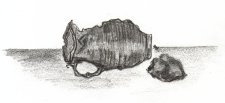

Go and Make More
I do not have a long attention span. My hands should be busy with the warm, lumpy clay. Instead I am gazing around our workshop, which is large—so large, in fact, that the room I am in is only a small part of it. There are many workers making their pots and plates at benches like mine. Some are industrious, others bored, happy, efficient, or painstaking. Some idle like me.
A sunbeam cruises up a wall to strike a finished pot, one of several on display. This is not ours, the common workers’ work. It was made by our master, the most skilled ceramics maker in the world. The pot, a brilliant blue, glows fierily as the sunbeam plays on its flawless surface. My eyes drop to my own work, the crooked line of pots on my workbench, knobbly and grey. Why ever did he hire us? Street-dwellers could do what we do! In fact, they do. I myself have seen them patting clay into crude shapes. Ours are little better, I acknowledge bitterly. Despite training, my hands are still clumsy, though I might spend hours trying to shape the soggy clay and smooth out the lumps.
What do they do with our work, I wonder, when it disappears into that black hole in the wall? We often hear noises issuing from beyond the hole: rumbling, cracking, grinding, the occasional crash. Very likely the pots we make provide stress relief to the real potters. They play cricket or squash with them, or roll them down an obstacle course watching to see which breaks first.
A hot pricking begins behind my eyes. In despair I fling away the pot I had been working on for the day. It subsides limply onto the floor, not even smashing decently but emitting a single, humiliating gloop. The other workers turn at the sound, some shocked and contemptuous, some understanding.
A crash comes from the hole in the wall, and I flush with anger. Grabbing some clay I start making large balls and stuffing them through the hole. After all, these have equally satisfactory smash value, besides being little uglier than the pots. My co-workers watch in horrified fascination as I double, even quadruple my normal output, working with certain malicious zest.
When the sun finally slips into his dusky pavilion we retire to our pallets. Now I am having misgivings. Master did tell us to make pots, and I made balls. Maybe I will be arrested, or thrown out into the streets. I listen for footsteps coming to get me.
Sure enough, they are coming. Faint at first, closer and closer, until a hand grips my shoulder and shakes me.
The master wishes to see you, a voice whispers. Then, down corridors I have never seen, with twists and turns, to a large wooden door upon which my companion raps briefly, and then vanishes with unnecessary haste.
Bidden to enter, I do so, limiting my focus to the tiles under my feet. But not for long; the flickering firelight highlights the gorgeous treasures placed on shelves all about the room: urns, vases, bowls in green, red, rich purple, azure, and cream. Some are plain and others adorned with flowers or fruits or various patterns—all works of finest art.
I had not even noticed him sitting quietly there, and when he rises I gasp and resume examining the tiles, all my fears surging back. But my mind is still struck by the beauty I had just seen—until it is rudely banished by a repulsive object breaking my view of my toes. A pot I made, mottled and lumpy.
Is this yours?
My eyes meet his fleetingly and fall again.
Come.
I am led to a workroom, to an oven which is producing fearsome heat. This is it, I think miserably. My pot will melt sighingly into the flames and I will be ejected ignominiously out of doors.
He places my pot in the oven and it turns bright red, but does not melt or burst or do anything violent. It just sits potato-like on the grate. Ah well, my pots were always contrary.
We wait a while until at last Master opens the oven to retrieve the pot with a tool. He is tired of waiting; he will crush it in front of me with his bare hands.
Watch closer, he reproves, with a hint of something in his voice. Could it be amusement?
While the pot cools, he explains that some pots, if the clay wasn’t dense enough or if it was too thin or impure, would be shattered by the oven’s heat. But this one is good.
Good?
He takes a stone and starts to grind the pot to powder. No, not … wait! I watch, astonished, as under his dexterous fingers the lumps disappear, the rim becomes symmetrical, the hollow perfectly rounded. No longer grey, the clay is white; not wet, but dry and hard.
The stone is swapped for a paintbrush, and rich, hunter green applied to the whole bowl; then red, and cherries appear. Finally gold to highlight the rim. It goes back in the oven for but a few minutes, then is taken out and glazed so the surface mirrors his face and mine. He places it on a shelf with other flawless vessels. It does not look out of place.
I stare at it there, then dumbly up at his face.
He smiles and strokes my cheek lightly with the back of his fingers, as one would a child.
Go and make more for me.